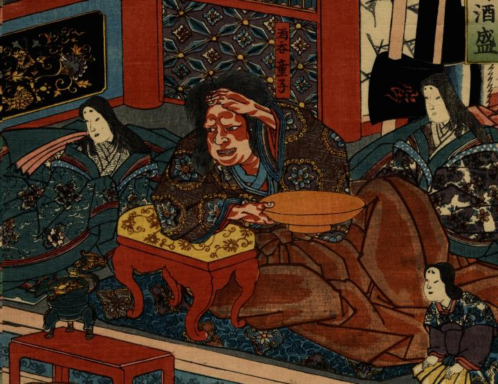

肘掛けにもたれ、酒を飲む酒呑童子。大きな朱の酒盃を持っており、大柄で肌が赤い。髪は結わず伸び放題で、茶の袴、華柄の上着を着ている。右手を額にかざすのは、舞を見物しているためである。
著作者：一勇齋國芳／出典：親書誌：U426_nichibunken_0266：大江山福壽酒盛；オオエヤマ フクジュ サカモリ／日付：2014／資源識別子：U426_nichibunken_0266_0001_0000
Copyright (c)2010- International Research Center for Japanese Studies, Kyoto, Japan. All rights reserved.